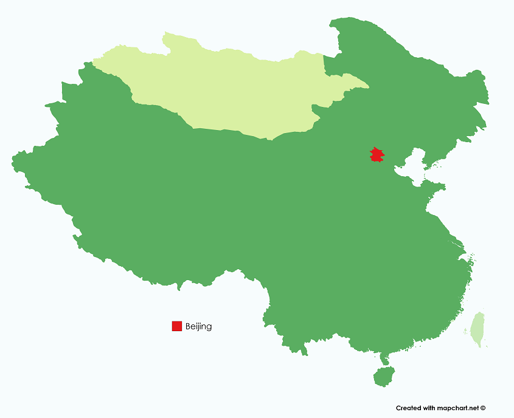

At Cuinese Cuisine App, we ensure you that only AUTHENTIC recipes that
represent the values of Chinese traditions can be featured.
Peking Roast Duck
北京烤鴨
Introduction
Peking Roast Duck is considered as an Imperial Dish as only the nobles and royalties have access to them in the past.
But today, it is one of the most renowned Chinese dish in the world.
The crispy skin is what people will die for
The dish can be dated to 700 years ago in the Yuan Dynasty.
Geography and Origin
Beijng is the heavenly capital of China since the Ming Dynasty.
Beiing is an interesting location as it is a melting pot among the Chinese, Machurian and Mongolian culture as it situates between the three homelands.
See the map below:

Ingredients
The main ingredients are
1 (4 pound) Duck, domesticated, meat and skin, raw
½ teaspoon Spices, cinnamon, ground
½ teaspoon Spices, ginger, ground
¼ teaspoon Spices, nutmeg, ground
¼ teaspoon Spices, pepper, white
⅛ teaspoon Spices, cloves, ground
3 tablespoons Soy sauce made from soy and wheat (shoyu)
1 tablespoon Honey, strained or extracted
1 Oranges, raw
1 tablespoon Parsley, raw
5 Onions, spring or scallions (includes tops and bulb), raw
Rinse the duck inside and out, and pat dry. Cut off tail and discard. In a small bowl, mix together the cinnamon, ginger, nutmeg, white pepper and cloves. Sprinkle one teaspoon of the mixture into the cavity of the duck. Stir one tablespoon of the soy sauce into the remaining spice mixture and rub evenly over the entire outside of the bird. Cut one of the green onions in half and tuck inside the cavity. Cover and refrigerate the bird for at least 2 hours, or overnight.
Place duck breast side up on a rack in a big enough wok or pot and steam for an hour adding a little more water, if necessary, as it evaporates. Lift duck with two large spoons, and drain juices and green onion.
Preheat the oven to 375 degrees F (190 degrees C). Place duck breast side up in a roasting pan and prick skin all over using a fork.
Roast for 30 minutes in the preheated oven. While the duck is roasting, mix together the remaining 2 tablespoons of soy sauce and honey. After 30 minutes, brush the honey mixture onto the duck and return it to the oven. Turn the heat up to 500 degrees F (260 degrees C). Roast for 5 minutes, or until the skin is richly browned. Do not allow the skin to char.
Prepare the duck sauce by mixing the plum jam with the sugar, vinegar and chutney in a small serving bowl. Chop remaining green onions and place them into a separate bowl. Place whole duck onto a serving platter and garnish with orange slices and fresh parsley. Use plum sauce and onions for dipping.